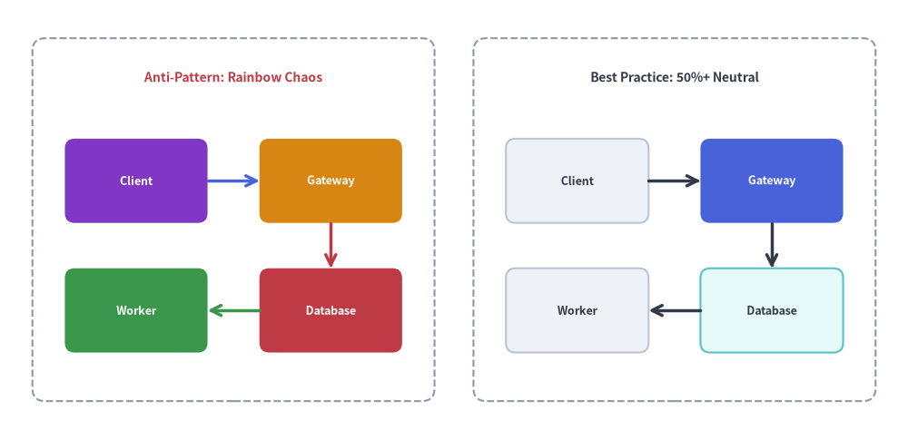
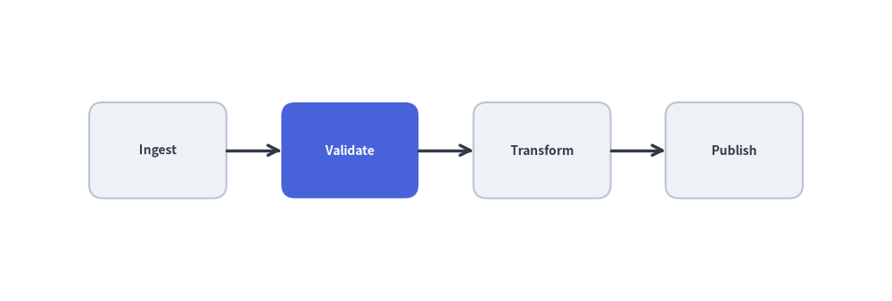

Diagram Design & Style Guide
Technical diagrams generated by developers and AI coding agents should look publication-grade, calm, and human-crafted.
This guide distills Drawlib's core visual design rules (uv run drawlib rules show style-guide) so every architectural schema, workflow, and chart maintains crisp hierarchy and readability.
1. Visual Comparison: Rainbow Chaos vs. 50%+ Neutral Hierarchy
When every box in a diagram is painted with a different saturated fill, nothing stands out and the reader experiences immediate visual fatigue. Grounding 50% or more of nodes in calm neutral cards while reserving saturated fills (Styles.PrimaryFlat) for 1–2 focal components establishes instant visual hierarchy:

Source Code
from drawlib.canvas import save, setup
from drawlib.icons import phosphor
from drawlib.lines import line
from drawlib.shapes import rectangle
from drawlib.styles import Styles
from drawlib.text import text
setup(width=128, height=62)
# Left Panel: Anti-Pattern (Rainbow Chaos - every node competes for attention)
rectangle((33, 31), width=58, height=54, style=Styles.MutedDashed.patch(shape_r=2))
phosphor.x_circle((9.5, 51.5), width=4.8, style=Styles.DangerFlat)
text((13.5, 51.5), "Anti-Pattern: Rainbow Chaos", style=Styles.DangerBold.patch(text_size=11.0, halign="left"))
left_nodes = [
(19, 36.5, "Client", phosphor.globe, Styles.AccentFlat, Styles.WhiteBold),
(47, 36.5, "Gateway", phosphor.cpu, Styles.WarningFlat, Styles.WhiteBold),
(19, 16.5, "Worker", phosphor.cpu, Styles.SuccessFlat, Styles.WhiteBold),
(47, 16.5, "Database", phosphor.database, Styles.DangerFlat, Styles.WhiteBold),
]
for cx, cy, lbl, icon_fn, card_st, txt_st in left_nodes:
rectangle(
(cx, cy),
width=24,
height=13.5,
style=card_st.patch(shape_r=1.5),
text=lbl,
text_style=txt_st.patch(text_size=10.5, xy_shift=(2.4, 0)),
)
icon_fn((cx - 7.5, cy), width=4.4, style=txt_st)
line((31, 36.5), (35, 36.5), arrow_head="->", style=Styles.PrimaryBold)
line((47, 29.7), (47, 23.3), arrow_head="->", style=Styles.DangerBold)
line((35, 16.5), (31, 16.5), arrow_head="->", style=Styles.SuccessBold)
# Right Panel: Best Practice (50%+ Neutral Baseline + 1 Hero Focal Point)
rectangle((95, 31), width=58, height=54, style=Styles.MutedDashed.patch(shape_r=2))
phosphor.check_circle((71.0, 51.5), width=4.8, style=Styles.SuccessFlat)
text((75.0, 51.5), "Best Practice: 50%+ Neutral", style=Styles.DarkBold.patch(text_size=11.0, halign="left"))
right_nodes = [
(81, 36.5, "Client", phosphor.globe, Styles.Neutral, Styles.DarkBold),
(109, 36.5, "Gateway", phosphor.cpu, Styles.PrimaryFlat, Styles.WhiteBold),
(81, 16.5, "Worker", phosphor.cpu, Styles.Neutral, Styles.DarkBold),
(109, 16.5, "Database", phosphor.database, Styles.SecondaryNeutral, Styles.DarkBold),
]
for cx, cy, lbl, icon_fn, card_st, txt_st in right_nodes:
rectangle(
(cx, cy),
width=24,
height=13.5,
style=card_st.patch(shape_r=1.5),
text=lbl,
text_style=txt_st.patch(text_size=10.5, xy_shift=(2.4, 0)),
)
icon_fn((cx - 7.5, cy), width=4.4, style=txt_st)
line((93, 36.5), (97, 36.5), arrow_head="->", style=Styles.DarkBold)
line((109, 29.7), (109, 23.3), arrow_head="->", style=Styles.DarkBold)
line((97, 16.5), (93, 16.5), arrow_head="->", style=Styles.DarkBold)
save()
2. The Three Pillars of Color Discipline
2.1. The 50%+ Neutral Baseline Rule
At least 50% of all nodes in any diagram must use calm neutral or tinted-neutral card styles:
- Pure Neutral Cards:
Styles.Neutral(light gray fill, subtle border, high-contrast charcoal text) orStyles.NeutralFlat(borderless card). - Tinted Neutral Cards:
Styles.PrimaryNeutral,Styles.SecondaryNeutral,Styles.BlueNeutral,Styles.TealNeutral,Styles.PurpleNeutral,Styles.AmberNeutral. These combine Tone 1 pastel fills with Tone 3 borders and Tone 6 dark text—providing subtle subsystem grouping without heavy saturation.
2.2. Focal Point Hierarchy (1–2 Hero Nodes)
Reserve saturated fills (Styles.PrimaryFlat or Styles.AccentFlat paired with text_style=Styles.WhiteBold) strictly for 1 to 2 primary focal points per diagram (such as the central API gateway, orchestrator, or bottleneck under discussion).
2.3. Semantic Role Discipline
Every semantic role has a clear architectural intent:
| Semantic Role | Recommended Tokens | Architectural Purpose |
|---|---|---|
Neutral |
Styles.Neutral, Styles.NeutralFlat |
Standard services, worker nodes, client apps, general steps (50%+ baseline). |
Primary |
Styles.PrimaryFlat (hero), Styles.PrimaryNeutral |
Primary focal component or core processing spine. |
Secondary |
Styles.SecondaryNeutral, Styles.Secondary |
Databases, caches, message brokers, auxiliary storage. |
Accent |
Styles.AccentFlat (hero), Styles.AccentNeutral |
External triggers, user entrypoints, highlighted events. |
Success |
Styles.SuccessNeutral, Styles.SuccessFlat |
Healthy states, verified outputs, completed stages. |
Warning |
Styles.WarningNeutral, Styles.WarningDotted |
Degraded paths, rate-limit queues, manual approval gates. |
Danger |
Styles.DangerNeutral, Styles.DangerFlat, Styles.DangerBold |
Error rollbacks, dead-letter queues, security risks. |
Muted |
Styles.MutedDashed, Styles.Muted |
VPC boundaries, Kubernetes namespaces, cluster zones. |
3. Typography & Connector Discipline
3.1. High-Contrast Neutral Typography
Never color general titles, node labels, or annotations with chromatic blue (Styles.Primary) or purple (Styles.Secondary):
- On Light Backgrounds (canvas,
Styles.Neutral,Styles.*Neutral): Always useStyles.DarkBoldorStyles.Dark, andStyles.Mutedfor secondary metadata (:8080,v1.2). - On Dark / Saturated Fills (
Styles.PrimaryFlat,Styles.AccentFlat,Styles.DangerFlat): Always useStyles.WhiteBoldorStyles.White.
3.2. Neutral Connectors by Default
Use Styles.DarkBold (or Styles.Dark) for standard workflow and architectural connectors. Reserve colored lines (Styles.DangerBold, Styles.WarningDotted, Styles.SuccessBold) strictly for semantic exception paths, retries, or verified commits.
4. Spatial Layout & Coordinate Discipline
4.1. Equidistant Spacing via Formulas
Never guess coordinates one by one from left to right, which causes right-edge compression. Compute node positions with a simple formula so margins and gaps are perfectly symmetrical:
from drawlib.canvas import save, setup
from drawlib.lines import line
from drawlib.shapes import rectangle
from drawlib.styles import Styles
setup(width=124, height=40)
total_w = 124
margin_x = 8
n = 4
box_w, box_h = 22, 15
y = 20
# Dynamically compute equal gap between N boxes
gap = (total_w - (margin_x * 2) - (box_w * n)) / (n - 1)
centers = [margin_x + (box_w / 2) + i * (box_w + gap) for i in range(n)]
labels = ["Ingest", "Validate", "Transform", "Publish"]
for i, cx in enumerate(centers):
if i == 1:
rectangle((cx, y), width=box_w, height=box_h, style=Styles.PrimaryFlat.patch(shape_r=2), text=labels[i], text_style=Styles.WhiteBold.patch(text_size=11.0))
else:
rectangle((cx, y), width=box_w, height=box_h, style=Styles.Neutral.patch(shape_r=2), text=labels[i], text_style=Styles.DarkBold.patch(text_size=11.0))
if i > 0:
prev_cx = centers[i - 1]
line((prev_cx + box_w / 2, y), (cx - box_w / 2, y), arrow_head="->", style=Styles.DarkBold)
save()

4.2. Semantic Coordinate Variables & Back-to-Front Z-Order
Structure drawing scripts into four clean stages:
- Geometry & Semantic Coordinates (
*_xy): Define named coordinate tuples (client_xy,gateway_xy,db_xy) once at the top. - Z-Layer 1 (Boundaries): Render background VPC / cluster containers (
Styles.MutedDashed). - Z-Layer 2 (Connectors): Snap lines to shape perimeter ports (
cx ± w/2,cy ± h/2). - Z-Layer 3 (Nodes & Badges): Render foreground node cards and callout badges.
4.3. Favor High-Level Components
Before assembling dozens of raw rectangle() and line() calls by hand, check if a high-level component handles layout automatically:
- Structured Architecture, Flow, Sequence, Class, State & ER Diagrams: See Diagrams.
- Auto-Layout DAGs & Topological Clusters: See Auto-Layout Graphs.